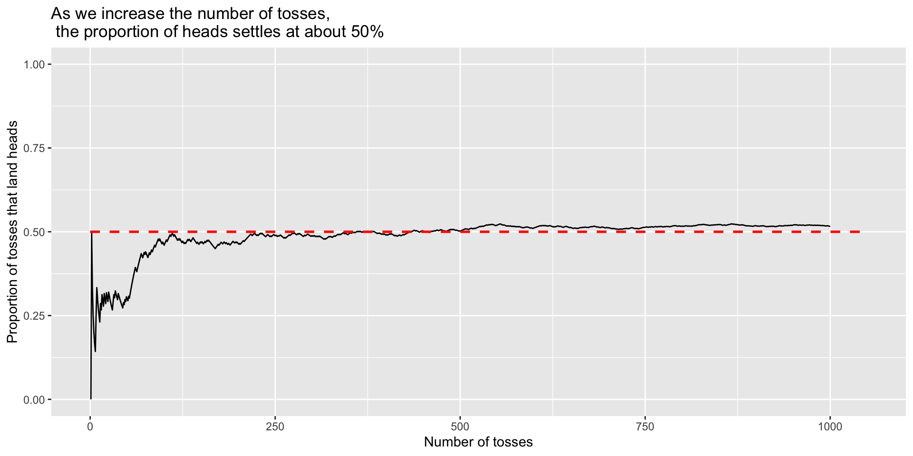

Problem Set 6 due next Tuesday at 9am (paper, max. 3)
RQ: Conditional Probability due Wednesday/Thursday at 11:59pm
No lab this week.
Concept review: Rules
Rules of probability
Let \(\Omega\) be the outcome space, and let \(P(A)\) denote the probability of the event \(A\). Then we have:
\(P(A) \ge 0\)
\(P(\Omega) = 1\)
If \(A\) and \(B\) are mutually exclusive (\(A \cap B = \{\}\)), then \(P(A \cup B) = P(A) + P(B)\)
Probability refresher
05:00
Concept Question 1
The Linda Problem
01:00
The Linda problem is from a very famous experiment conducted by Daniel Kahneman and Amos Tversky in 1983 (The version below is from the book Thinking, Fast and Slow by Kahneman, page 156):
Linda is thirty-one years old, single, outspoken, and very bright. She majored in philosophy. As a student, she was deeply concerned with issues of discrimination and social justice, and also participated in antinuclear demonstrations.
Which alternative is more probable?
Linda is a bank teller.
Linda is a bank teller and is active in the feminist movement.
Kahneman, Daniel. Thinking, Fast and Slow (p. 158). Farrar, Straus and Giroux.
# A tibble: 2 × 2
tosses n
<chr> <int>
1 Heads 251
2 Tails 249
We see that as the number of tosses increases, the split of heads and tails begins to look closer to 50-50.
Looking at proportions:
Here is a plot of the proportion of tosses that land heads when we toss a coin \(n\) times, where \(n\) varies from \(1\) to \(1000\).

Concept Question 2
01:00
Suppose Ali and Bettina are playing a game, in which Ali tosses a fair coin \(n\) times, and Bettina wins one dollar from Ali if the proportion of heads is less than 0.4. Ali lets Bettina decide if \(n\) is 10 or 100.
Which \(n\) should Bettina choose?
Concept Question 3
Part 1: Suppose we roll a die 4 times. The chance that we see six (the face with six spots) at least once is given by \(\displaystyle \frac{1}{6} + \frac{1}{6} + \frac{1}{6} + \frac{1}{6} = \frac{4}{6} = \frac{2}{3}\)
True or false?
Part 2: Suppose we roll a pair of dice 24 times. The chance that we see a pair of sixes at least once is given by \(\displaystyle 24 \times \frac{1}{36} = \frac{24}{36} = \frac{2}{3}\)
True or false?
02:00
Concept Question 4
01:00
Consider the Venn diagram below, which has 20 possible outcomes in \(\Omega\), depicted by the purple dots. Suppose the dots represent equally likely outcomes. What is the probability of \(A\) or \(B\) or \(C\)? That is, what is \(P(A \cup B \cup C)\)?